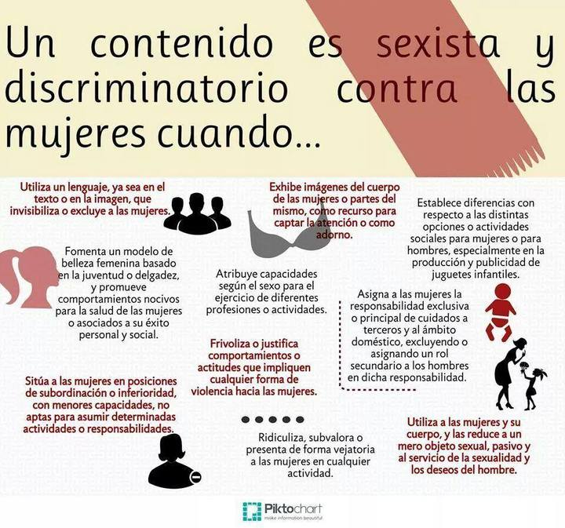

Influencia Social y Grupos
Caso práctico 2: Publicidad sexista
Juan Muñoz
Universitat Autònoma de Barcelona
http:/juan.psicologiasocial.eu
##D&G 2007
##Cervezas
##Perfumes
1Million-PacoRabanne {.figcaption}
##Axe: Excite
Premio a la efectividad creativa 2012 (Cannes)
##El sistema sexo-género

##The codes of gender
##Cosificación: Muestra únicamente partes del cuerpo
Caroline Heldman
##Cosificación: Soporte para objetos
##Cosificación: Persona sexualizada intercambiable
##Cosificación: Persona vejada y humillada
http://www.stopfemaledeathinadvertising.com/
##Cosificación: Disponibilidad sexual como característica
##Cosificación: Cuerpo como lienzo
##Qué hay que hacer
- Definir un emisor
- Determinar qué
- Decidir a quién
- Crear un eslogan
- Elaborar mensaje
 Modelo de comunicación de Lasswell
Modelo de comunicación de Lasswell

##¿Ridículo?
##El informe
- Fecha de entrega: 21 de noviembre
- Parte grupal: 70% calificación
- Parte individual: 30% calificación
- Total: 10% asignatura